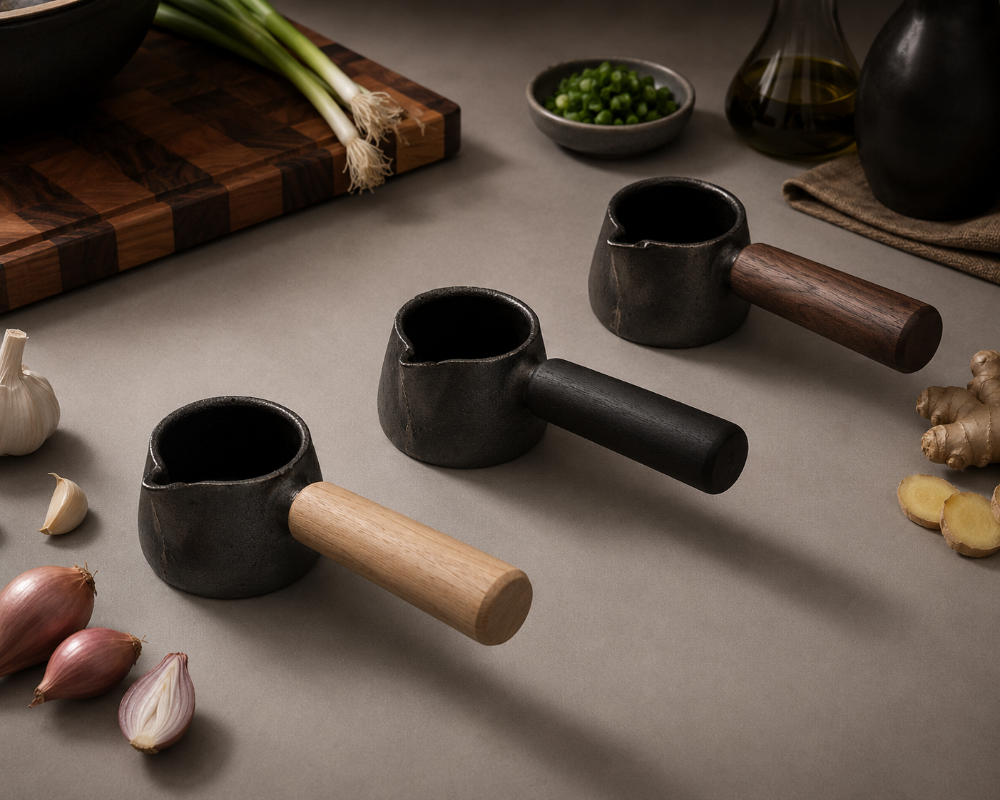

1 / 3
ORO
Celebratory Asian Cookware for Stove-to-Table Dining
Overview
Celebratory Asian Cookware for Stove-to-Table Dining
Who is it for?
Designed specifically for young urban home cooks (ages 25–35) who value intentional dining and actively enjoy Asian culinary methods.
This demographic seeks to minimize dishwashing and streamline workflows without sacrificing the visual beauty and presentation of their shared meals.
Situational Analysis
The Problem
Standard cookware forces clunky transitions. Moving food from the pan to a serving dish often results in messy presentation and rapid heat loss.
The Solution
A continuous ritual. By designing cookware beautiful enough to center the table, we eliminate the need for intermediate serving dishes altogether.
The Goal
To create a grounded, shared experience. The heavy cast iron retains heat for slow, relaxed dining, turning dinner into a memorable event.
Process
Ideation
Early sketches exploring wok handle ergonomics and overall form language before moving into physical testing.


Physical Model
Prototyping the handle grip, lid pattern, and cast form to validate ergonomics and proportion before finalizing the design.


Physical Outcome
The finished cast iron cookware, brought from stove to table.


Rendering
Final CAD renders showing the cookware's form, finish, and details.